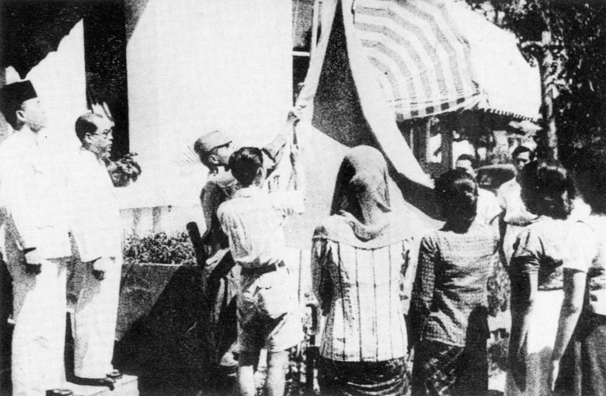
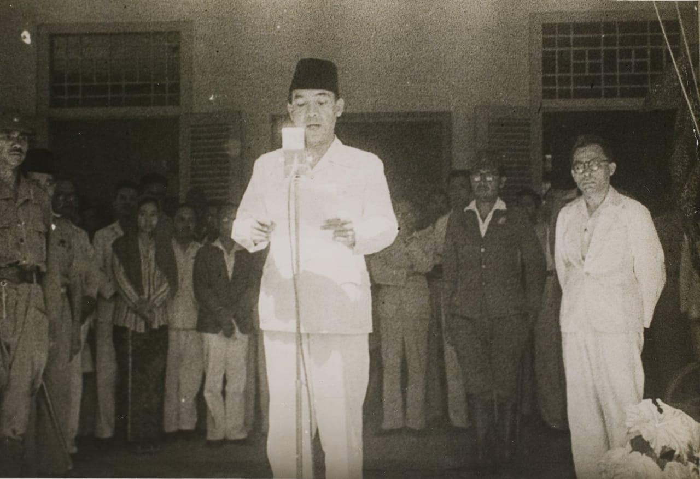
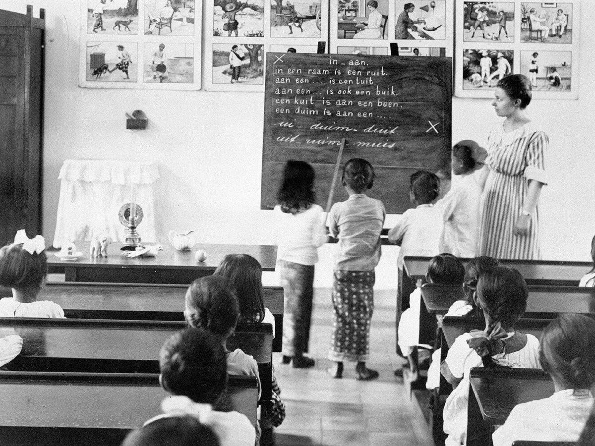
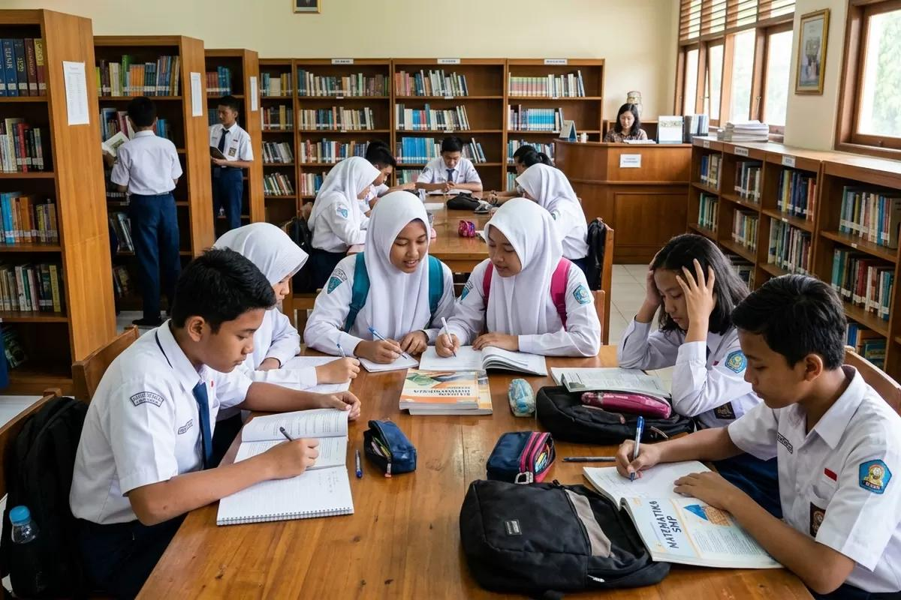

01Merdeka dari penjajahan
Indonesia telah terbebas dari penjajahan dan memiliki hak untuk menentukan arah pemerintahannya sendiri.
Sebuah pertanyaan untuk kita semua
Kemerdekaan bukan hanya tentang terbebas dari penjajahan, tetapi tentang bagaimana setiap masyarakat dapat merasakan keadilan, kesejahteraan, dan kesempatan yang sama.

Pertanyaan besar
Mari kita lihat lebih dalam.
01 - Analisis

01Indonesia telah terbebas dari penjajahan dan memiliki hak untuk menentukan arah pemerintahannya sendiri.

02Kemerdekaan juga berarti masyarakat memiliki kesempatan untuk memperoleh pendidikan, pekerjaan, kehidupan yang layak, dan keadilan.

03Masih terdapat berbagai persoalan seperti kemiskinan, kesenjangan sosial, pengangguran, dan masalah pendidikan yang perlu diselesaikan bersama.
02 - Argumentasi
Tidak semua masyarakat memiliki kesempatan yang sama dalam mendapatkan pendidikan, pekerjaan, maupun kehidupan yang layak.
Perbedaan kondisi ekonomi dan sosial menunjukkan bahwa kesejahteraan belum sepenuhnya dirasakan oleh seluruh masyarakat.
Pelajar dapat mengisi kemerdekaan dengan belajar, mengembangkan kemampuan, menjaga persatuan, dan menghasilkan karya yang bermanfaat.
03 - REFLEKSI
Renungan bersama
Kemerdekaan adalah kesempatan untuk terus memperbaiki kehidupan bangsa. Karena itu, perjuangan generasi sekarang bukan lagi melawan penjajah, tetapi berusaha menciptakan Indonesia yang lebih adil, maju, dan sejahtera.
Penutup
Indonesia sudah merdeka sebagai sebuah negara. Namun, perjuangan untuk mewujudkan kesejahteraan, keadilan, pendidikan yang merata, dan kehidupan yang layak bagi seluruh masyarakat masih terus berlangsung.